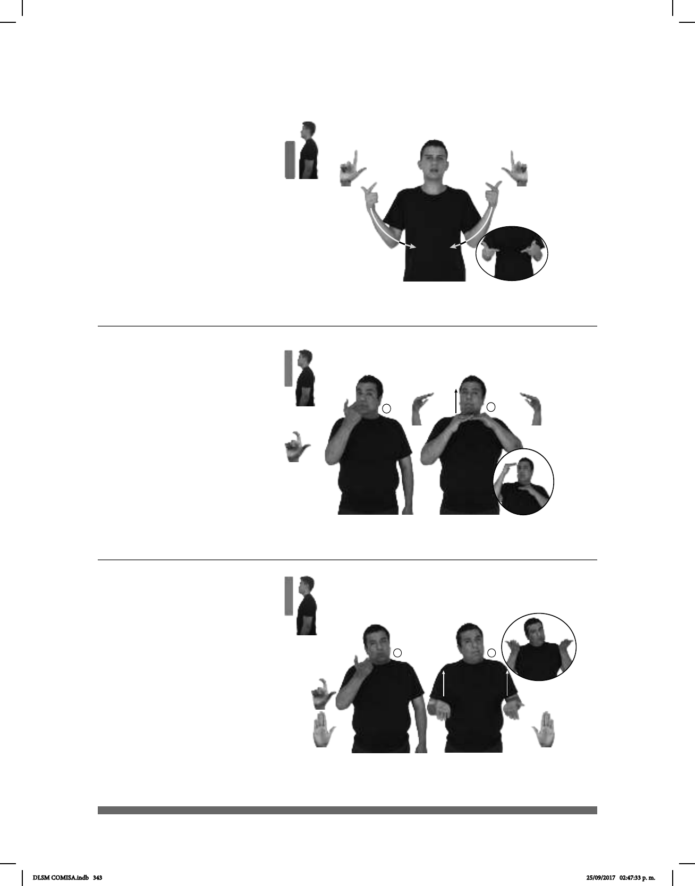

343
(L-9)
(L-8)
Seña: SS
L.1
Palmas hacia
adentro.
De los hombros al
abdomen, de los lados al centro.
Los brazos se
mueven formando un arco.
sust. m. Ataque
sorpresivo y violento que hace
alguien a un lugar o a una persona
Seña: SC: I. SM; II. SS
I. L.10; II. B-P.2
I. Palma hacia
adentro; II. Palmas hacia arriba.
I. A la altura del cuello;
II. De la cintura a los hombros.
I. y II. Recto.
Cabeza
inclinada, boca abierta.
v. tr. Hacer que la
cantidad, el tamaño o la intensidad
de algo sea mayor o más grande.
(L-7)
LUGAR TEPITO MUCHOS ASALTOS HABER
allá
En Tepito hay muchos asaltos.
12% SUELDO YA AUMENTAR
Aumentó el sueldo en un 12%
PRECIO AQUÍ YA AUMENTAR
Los precios de este lugar han aumentado.
Seña: SC: I. SM; II. SB
I. Seña que pasa de
L.10 a B-P.14; II. MD y MB B-P.14.
I. Palma hacia adentro; II.
Palmas hacia abajo.
I. A la altura de la boca; II.
MD del cuello a la cara. MB a la altura
del cuello.
I. Recto hacia el frente;
II. MD recto.
Cabeza
ligeramente adelantada, boca abierta.
v. tr. Hacer que la cantidad,
el tamaño o la intensidad de algo sea
mayor o más grande.
DLSM COMISA.indb 343 25/09/2017 02:47:33 p. m.